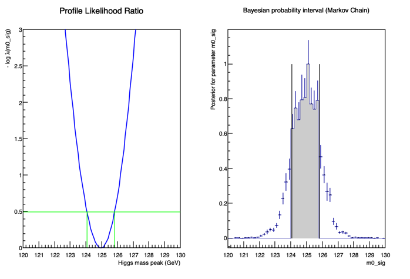

Exercise 2 — Higgs mass interval
Exercise #2: Interval for the Higgs mass¶
An interesting parameter to determine is the Higgs mass. This can be quoted as a confidence interval in a frequentist approach, or as a bayesian probability interval. We'll try both ways.
First, we need to modify the original fit model for this. In
exercise_0
we fitted the signal using a rigid histogram to descrive the invariant mass distribution of the Higgs. This doesn't allow inference on the Higgs mass, because the model doesn't depend on it. One can solve this problem many ways, the simplest is to change the signal parametrization in a way that depends on the mass, for example using a parametric shape.
First, we can copy the original exercise in a new file, so we can do these modifications:
cp exercise_0_h125_xsec.py exercise_2_hmass.py
Then we need to edit it and change the signal PDF. Remove the signal
RooHistPdf
description of
pdfh125
, and add a parametric description in its place. For this we will use a Crystal Ball function (see
Wikipedia
), which is essentially a Gaussian core with a polynomial left tail to account for energy losses. The initial values of the parameters have been set up from a fit to the MC, and the mass is freely floating:
#Signal definition: use a Crystal Ball function centered at 125 GeV. Shape parameters taken from simulation
m0_sig = ROOT.RooRealVar("m0_sig","Higgs mass peak",125.,123.,127.,"GeV")
resol_h = ROOT.RooRealVar("resol_h","Resolution around the peak",3.)
alpha_CB = ROOT.RooRealVar("alpha_CB","Alpha param of CB",2.)
n_CB = ROOT.RooRealVar("n_CB","N param of CB",1.)
pdfh125 = ROOT.RooCBShape("pdfh125","Signal PDF",m4l,m0_sig,resol_h,alpha_CB,n_CB)
Also, change the ROOT file name where the workspace is saved so that you do not overwrite the original one:
fOutput = ROOT.TFile("Workspace_m4lfit_Hmass.root","RECREATE")
Remember also to change the file name for the graphic output of the
TCanvas
!
If you now run the fit, you'll see that
m0_sig
is now a parameter fitted.
We can now try to determine an appropriate interval for this parameter. First, create a new file,
exercise_2_massInt.py
. As usual, import
ROOT
:
#Import the ROOT libraries
import ROOT
Import the new workspace with the parametric signal:
#Open the rootfile and get the workspace from the exercise_0
fInput = ROOT.TFile("Workspace_m4lfit_Hmass.root")
ws = fInput.Get("ws")
ws.Print()
Identify the parameter of interest, the mass of the Higgs, and construct the
ModelConfig
object:
#Let the model know what is the parameter of interest
m0_sig = ws.var("m0_sig")
m0_sig.setRange(120., 130.) #this is mostly for plotting reasons
poi = ROOT.RooArgSet(m0_sig)
#Configure the model
model = ROOT.RooStats.ModelConfig()
model.SetWorkspace(ws)
model.SetPdf("totpdf")
model.SetParametersOfInterest(poi)
We want a 68% confidence interval. Call the
ProfileLikelihoodCalculator
and configure it:
#Set confidence level
confidenceLevel = 0.68
#Build the profile likelihood calculator
plc = ROOT.RooStats.ProfileLikelihoodCalculator(ws.data("unbinned_m4l"), model)
plc.SetParameters(poi)
plc.SetConfidenceLevel(confidenceLevel)
We then tell the calculatorr to determine the interval:
#Get the interval
pl_Interval = plc.GetInterval()
We also want to determine the bayesian probability interval for the same parameter. Standard Bayesian calculators are very slow, because of the high number of costly intergrations.
RooStats
though has also a Markov-Chain calculator, we'll use that:
#Now let's determine the Bayesian probability interval
#We could use the standard Bayesian Calculator, but this would be very slow for the integration
#So we profit of the Markov-Chain MC capabilities of RooStats to speed things up
mcmc = ROOT.RooStats.MCMCCalculator(ws.data("unbinned_m4l") , model)
mcmc.SetConfidenceLevel(confidenceLevel)
mcmc.SetNumIters(500000) #Metropolis-Hastings algorithm iterations
mcmc.SetNumBurnInSteps(200) #first N steps to be ignored as burn-in
mcmc.SetLeftSideTailFraction(0.5) #for central interval
Ask the calculator to provide the interval:
MCMC_interval = mcmc.GetInterval()
Now we can plot the confidence scan for the
ProfileLikelihoodCalculator
and the posterior for the bayesian method.
RooStats
provides some useful tools for this:
#Let's make a plot
dataCanvas = ROOT.TCanvas("dataCanvas")
dataCanvas.Divide(2,1)
dataCanvas.cd(1)
plot_Interval = ROOT.RooStats.LikelihoodIntervalPlot(pl_Interval)
plot_Interval.SetTitle("Profile Likelihood Ratio")
plot_Interval.SetMaximum(3.)
plot_Interval.Draw()
dataCanvas.cd(2)
plot_MCMC = ROOT.RooStats.MCMCIntervalPlot(MCMC_interval)
plot_MCMC.SetTitle("Bayesian probability interval (Markov Chain)")
plot_MCMC.Draw()
dataCanvas.SaveAs("exercise_2_massInt.png")
We can now ask the calculators to print the intervals:
#Now print the interval for mH for the two methods
print("PLC interval is [", pl_Interval.LowerLimit(m0_sig), ", ", pl_Interval.UpperLimit(m0_sig), "]")
print("Bayesian interval is [", MCMC_interval.LowerLimit(m0_sig), ", ", MCMC_interval.UpperLimit(m0_sig), "]")
In some versions of pyROOT, the calculators may have problems in cleaning up memory on close, so you may want to add this if you get error messages at the end:
#pyROOT sometimes fails cleaning memory, this helps
del mcmc
The plot representing the scan of the mass parameter should look like this:

You can find the modified mass fit here: exercise_2_hmass.py . You can find the program to calculate the intervals here: exercise_2_massInt.py